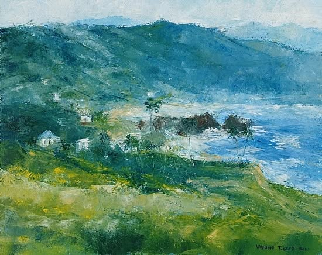

Show me your work.
Upload a photo of your drawing or painting. You'll get an instant first look written in my teaching style: what is working, the one change that will help most, and what to do on your next pass. When you want my own eyes on it, ask for a personal critique.

Island Scape, 16 × 20 in, mixed media
How a critique reads
A calm, airy painting. You feel the height of the hillside and the cool air coming off the bay, and the eye slides down the green slope to the water.
What's working
- Atmosphere: the mountains fade into soft blue-grey, so the distance really feels far away.
- A strong diagonal: the hillside runs from the lower left down toward the bay and carries the eye into the scene.
- Color harmony: the yellow-greens, blue-greens and sea blues belong to one family, so nothing feels out of place.
- Scale: the tiny white houses tell us how big the land is.
One strong improvement: choose the star
The houses, the palms, the dark rocks and the white surf all ask for attention at the same volume, so the eye wanders. Pick one, for example the dark rocks against the white surf, where your strongest contrast already is. Put your lightest light next to your darkest dark there, sharpen those edges, and soften the houses on the left a little so they support it.
Next pass
- The foreground band is wide and even. Add a few darker, directional strokes that point toward the bay.
- The mountain ridge runs almost parallel to the top edge. Break it with one higher peak or a gap of light.
"Make one strong improvement before five small ones."
Your artwork
Upload a photo of a sketch, a block-in or a finished piece. Take it straight on, in daylight, with the whole artwork in view.
Free: up to 3 instant critiques a day.
Studio Critique
Your critique will appear here.
Upload a photo of your artwork and press Get My Instant First Look. It takes about half a minute.
Want my own eyes on your work?
I'll study your piece myself and write you a detailed critique: what to keep, what to change, and how, in the order that will help you most. Delivered by email within 7 days.